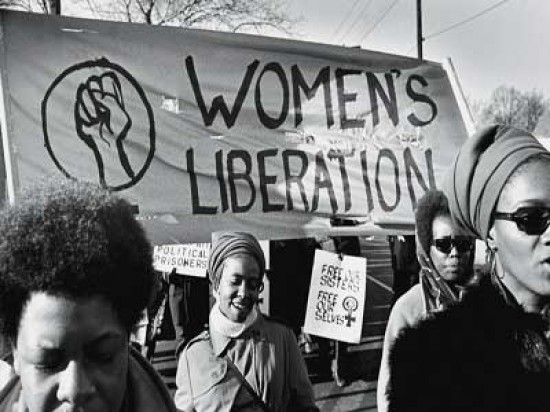

Todas las mujeres se unen el 8 de marzo para conmemorar esta fecha tan importante
La necesidad de conmemorar un Día Internacional de la Mujer nace al final del siglo XIX, después de la Revolución Industrial. Este fue un periodo histórico que transformó la economía y el modo de trabajo desde finales del siglo XVIII y principios del siglo XIX. Sin embargo, uno de los problemas más grandes era que muchas mujeres eran explotadas y ninguna ley las protegía.
El 8 de marzo de 1857, las mujeres que trabajaban en la industria textil, que eran llamadas “garment workers” en inglés, en Nueva York, organizaron una huelga. Ellas peleaban para que hubiera salarios más justos y condiciones laborales más humanas. Sin embargo, al momento de alzar la voz, los agentes de la policía las detienen.

Dos años más tarde, las manifestantes crearon su primer sindicato para pelear por sus derechos.
51 años después, el 8 de marzo de 1908, 15,000 mujeres vuelven a tomar las calles de Nueva York para exigir un aumento de sueldo, menos horas de trabajo, derecho al voto y prohibir el trabajo infantil. El eslogan que utilizaron fue “Pan y Rosas”. Ya que, el pan representaba la seguridad económica, y las rosas, una mejor calidad de vida.
El día 28 de febrero de 1909 se celebró en todo el territorio de Estados Unidos el Día Nacional de la Mujer. La fecha elegida fue el último domingo de febrero.
En Dinamarca se propone un Día Internacional de la Mujer.
En el año de 1910, en Copenhague, se celebró una conferencia internacional entre diferentes naciones del mundo. En este encuentro participaron más de 17 países y acudieron cientos de participantes. Una de las propulsoras fue Clara Zetkin.
En 1911 se celebra por primera vez el Día Internacional de la Mujer en varios países de Europa y Estados Unidos. El día elegido fue el 19 de marzo.
Una fecha clave:
Una terrible tragedia ocurrió el 25 de marzo de 1911. Ya que, más de 100 trabajadoras textiles, mujeres inmigrantes en su mayoría de Europa del Este e Italia, perdieron la vida en un incendio en la fábrica de Triangle Shirtwaist en Nueva York.
Un total de 123 trabajadoras y 23 hombres murieron. El número de heridos fue de 70. La víctima de más grande tenía 43 años y la más joven, 14 años. Esto impulsó a las mujeres a continuar la lucha.
Los movimientos feministas, durante la Revolución Rusa de 1917, también fueron muy importantes.
Al momento de caer la monarquía en Rusia, un gran número mujeres se encontraban en huelga para exigir mejores condiciones de vida. Por lo que, el gobierno provisional concedió el voto femenino el 23 de febrero de 1917, según el calendario juliano, o el 8 de marzo, acorde al calendario gregoriano.
No fue hasta después de la Segunda Guerra Mundial que más países también se unieron y comenzaron a conmemora el Día de la Mujer. En el año de 1975, las Naciones Unidas celebraron por primera vez el Día Internacional de la Mujer el 8 de marzo. Hoy en día, la lucha sigue por erradicar la violencia de género y lograr que exista una igualdad entre mujeres y hombres. El 8 de marzo de 1857, las mujeres que trabajaban en la industria textil, que eran llamadas “garment workers” en inglés, en Nueva York, organizaron una huelga. Ellas peleaban para que hubiera salarios más justos y condiciones laborales más humanas. Sin embargo, al momento de alzar la voz, los agentes de la policía las detienen.